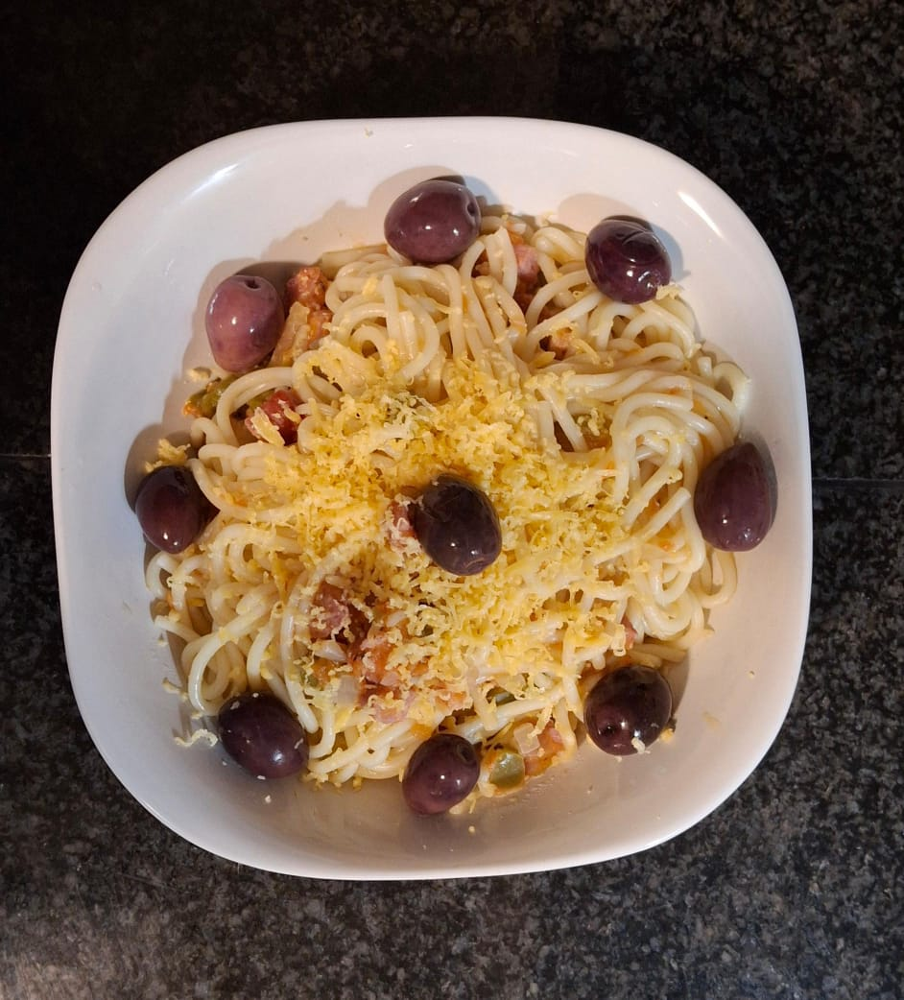

Spaghetti all'Amatriciana
Apparatus
- Pot for cooking spaghetti
- Frying pan or stir fry pan
- Cheese grater
- Blender (recommended) or vegetable grater for pureeing tomatoes
- Knife
- Cutting board
- Stove
 Spaghetti alla Amatriciana served with grated cheese and garnished with olives.
Ingredients
- 200g spaghetti
- 1/2 green bell pepper, sliced
- 3 large tomatoes, pureed
- 3 garlic cloves, minced
- 1/2 large onion, sliced
- 100g bacon (or guanciale), diced
- 1/2 teaspoon salt
- 3/4 teaspoon ground black pepper
- 50g cheese (Pecorino Romano recommended, but any cheese will do), grated (optional)
- 60ml extra virgin olive oil or any cooking oil
- Pitted olives, for garnish (optional)
Method
- Heat the olive oil in a large pan over medium heat.
- Add the diced bacon (or guanciale) to the pan and cook until crispy.
- Add the sliced bell pepper, minced garlic, and sliced onion to the pan. Sauté until the vegetables are tender.
- Pour in the pureed tomatoes and stir well to combine.
- Season the sauce with salt and ground black pepper. Stir well.
- Bring the sauce to a boil, then reduce the heat and simmer until the sauce thickens to your desired consistency.
- While the sauce is simmering, cook the spaghetti according to the package instructions until al dente. Drain and set aside.
- Once the sauce is ready, add the cooked spaghetti to the pan and toss to coat evenly with the sauce.
- Drain any excess water.
- Optionally, grate cheese over the spaghetti and/or garnish with pitted olives after serving.